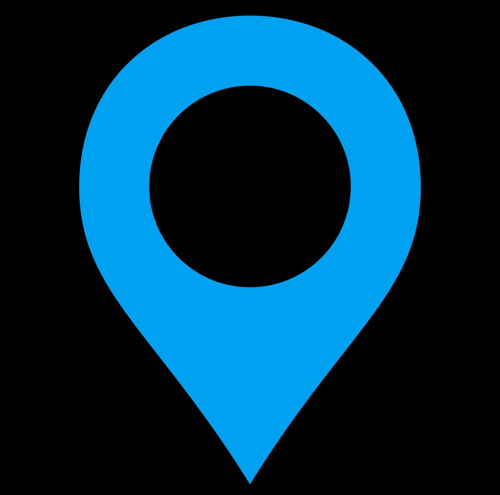
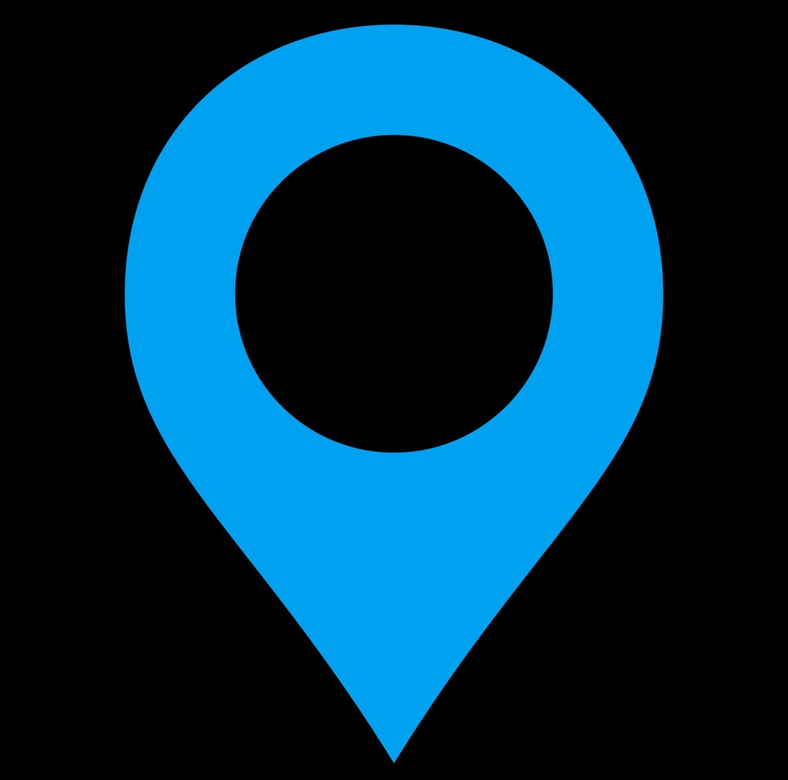
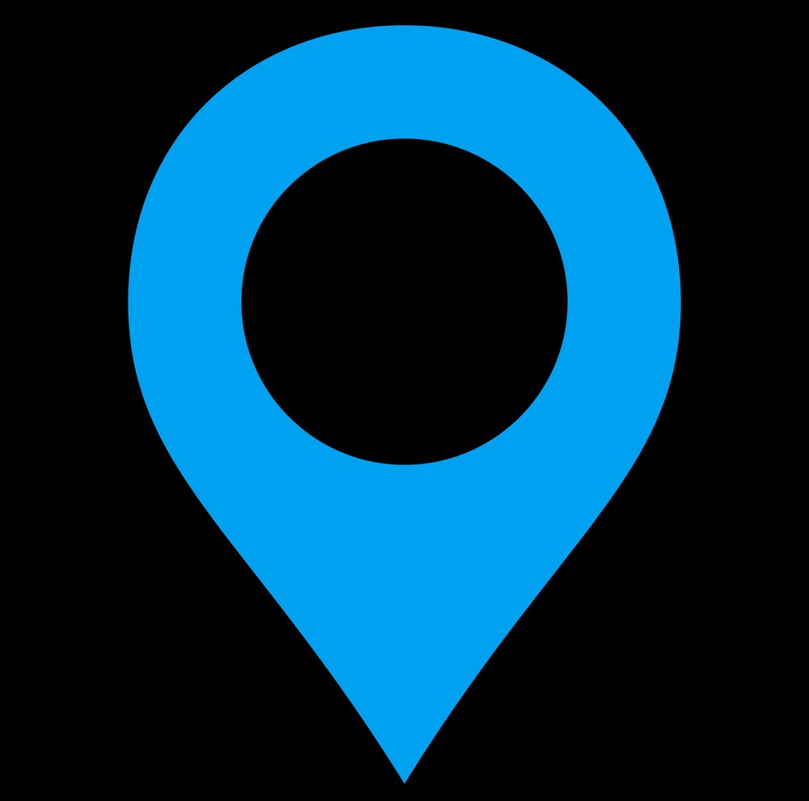

Raúl Hoffrén | Personal Website
- Advanced Geo Visor -

Mapa de la red de observatorios climáticos de la Comunidad Foral de Navarra
Se muestran también las Comarcas Agrarias de Navarra y el MDE.
 
